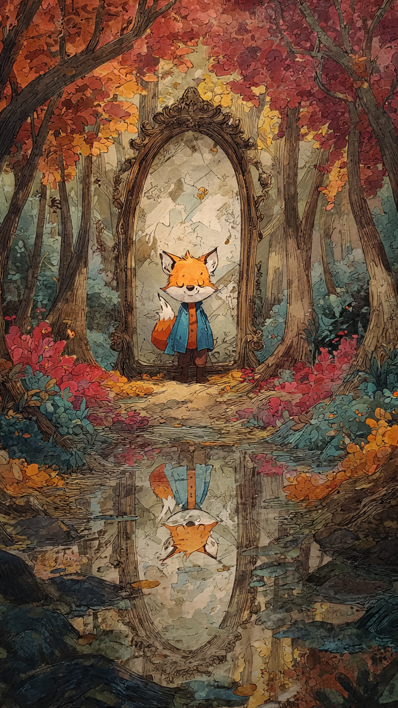

في غابة جميلة مليئة بالأشجار العالية والأنهار الصافية، كان يعيش ثعلب صغير اسمه فوفو.
كان فوفو ذكيًا جدًا، وكان يحب أن يثبت للجميع أنه أذكى حيوان في الغابة.
لكنه كان يملك عيبًا صغيرًا...
كان يحب خداع الآخرين حتى عندما لا يحتاج إلى ذلك.
كان يقول لأصدقائه:
"أنا أستطيع حل أي مشكلة!"
وكان دائمًا يخترع حيلًا جديدة ليجعل الحيوانات تندهش منه.
في يوم من الأيام، قال للأرنب:
"لقد وجدت طريقًا سريًا يؤدي إلى مكان مليء بالجزر اللذيذ."
فرح الأرنب وذهب معه بسرعة.
لكن عندما وصلا، اكتشف الأرنب أن الطريق لا يؤدي إلى شيء.
ضحك فوفو وقال:
"كنت أمزح فقط!"
شعر الأرنب بالحزن وقال:
"الحيل قد تجعل الآخرين يضحكون مرة..."
"لكنها قد تجعلهم لا يثقون بك بعد ذلك."
لم يهتم فوفو كثيرًا.
قال في نفسه:
"أنا ذكي، وسأستطيع دائمًا خداع الجميع."
وفي اليوم التالي، قرر أن يقوم بأكبر خدعة له.
وجد صندوقًا قديمًا في الغابة، ووضع بداخله أوراقًا ملونة وأحجارًا لامعة.
ثم أخبر الحيوانات:
"وجدت كنزًا سحريًا يحقق الأمنيات!"
تجمعت الحيوانات حول الصندوق بحماس.
لكن عندما فتحوه...
اكتشفوا الحقيقة.
نظر الجميع إلى فوفو بصمت.
وشعر الثعلب لأول مرة بشيء غريب.
لم يكن انتصارًا...
بل كان شعورًا بالوحدة.
وفي تلك الليلة، جلس فوفو وحده تحت شجرة كبيرة.
وفجأة سمع صوتًا قادمًا من بعيد.
كان هناك شيء سيجعله يكتشف أن أكبر خدعة قام بها...
كانت ضد نفسه.
📷 الصورة رقم 1

جلس فوفو تحت الشجرة وهو يشعر بالحزن.
لأول مرة لم يجد أحدًا يضحك معه أو يستمع إلى حيله.
نظر حوله وقال:
"لماذا لم يعد أحد يريد اللعب معي؟"
وبينما كان يفكر، ظهرت بومة عجوز من فوق الشجرة.
قالت له:
"لأنك جعلت الجميع يشكون في كل كلمة تقولها."
خفض فوفو رأسه وقال:
"لكنني كنت أريد فقط أن أكون مميزًا."
ابتسمت البومة وقالت:
"الذكاء الحقيقي ليس أن تخدع الآخرين..."
"بل أن تستخدم ذكاءك لمساعدتهم."
في اليوم التالي، حدث أمر صعب في الغابة.
فقد ضاعت مجموعة من الحيوانات الصغيرة أثناء عودتها إلى المنزل.
بدأ الجميع يبحث عنها، لكن الطريق كان مليئًا بالأشجار الكثيفة ولم يعرف أحد أين يذهب.
تقدم فوفو وقال:
"أستطيع مساعدتكم."
نظر إليه الجميع بتردد.
فقد كانوا يخافون أن تكون هذه خدعة جديدة.
لكن فوفو قال:
"هذه المرة سأثبت لكم أنني أستطيع فعل شيء جيد."
استخدم فوفو ذكاءه الحقيقي.
تتبع آثار الأقدام، ولاحظ علامات صغيرة على الأشجار، واكتشف الطريق الصحيح.
وبعد وقت قصير، وجد الحيوانات الصغيرة وأعادها إلى عائلاتها.
فرحت الحيوانات وشكرته.
لكن فوفو لم يشعر بالفخر مثل المرات السابقة.
بل شعر بشيء أجمل...
شعر أنه فعل شيئًا له معنى.
قال الأرنب:
"لقد ساعدتنا حقًا هذه المرة."
ابتسم فوفو وقال:
"أعتقد أنني كنت أخدع نفسي عندما ظننت أن الخداع يجعلني ذكيًا."
لكن كان لا يزال هناك درس أخير ينتظره.
📷 الصورة رقم 2
مرت الأيام، وبدأت حيوانات الغابة تلاحظ تغيرًا كبيرًا في فوفو.
لم يعد يخترع الحيل ليضحك على الآخرين.
بل أصبح يستخدم ذكاءه لمساعدة الجميع.
كان يساعد السناجب في العثور على أماكن آمنة لجمع الطعام، ويساعد الطيور في بناء أعشاش قوية، وكان دائمًا يقول:
"أفضل شعور هو أن تجعل شخصًا آخر سعيدًا."
وفي يوم من الأيام، وجد فوفو صندوقه القديم الذي كان يستخدمه في الخدع.
نظر إليه للحظة.
ثم ابتسم وقال:
"كنت أظن أن هذا الصندوق يجعلني ذكيًا..."
"لكنني كنت أحتاج فقط إلى استخدام عقلي بطريقة أفضل."
حفر فوفو حفرة صغيرة وزرع بجانبها شجرة جديدة.
وقال لأصدقائه:
"هذه الشجرة ستكون تذكيرًا لي بأن الأشياء الجميلة تنمو بالصدق، وليس بالخداع."
كبرت الشجرة مع مرور الوقت، وأصبحت مكانًا يجتمع فيه جميع حيوانات الغابة للعب والحكايات.
وأصبح فوفو معروفًا ليس بأنه الثعلب المخادع...
بل بأنه الثعلب الحكيم الذي تعلم من أخطائه.
وفي كل مرة كان يرى أحدًا يحاول خداع الآخرين، كان يقول له:
"قد تستطيع خداع الناس لفترة قصيرة..."
"لكن لا تخدع نفسك، لأن الصدق هو الطريق الذي يجعلك تكسب أصدقاء حقيقيين."
🦊🌿 انتهت القصة 🌿🦊
العبرة:
الذكاء الحقيقي لا يكون في خداع الآخرين، بل في استخدام قدراتك لفعل الخير.